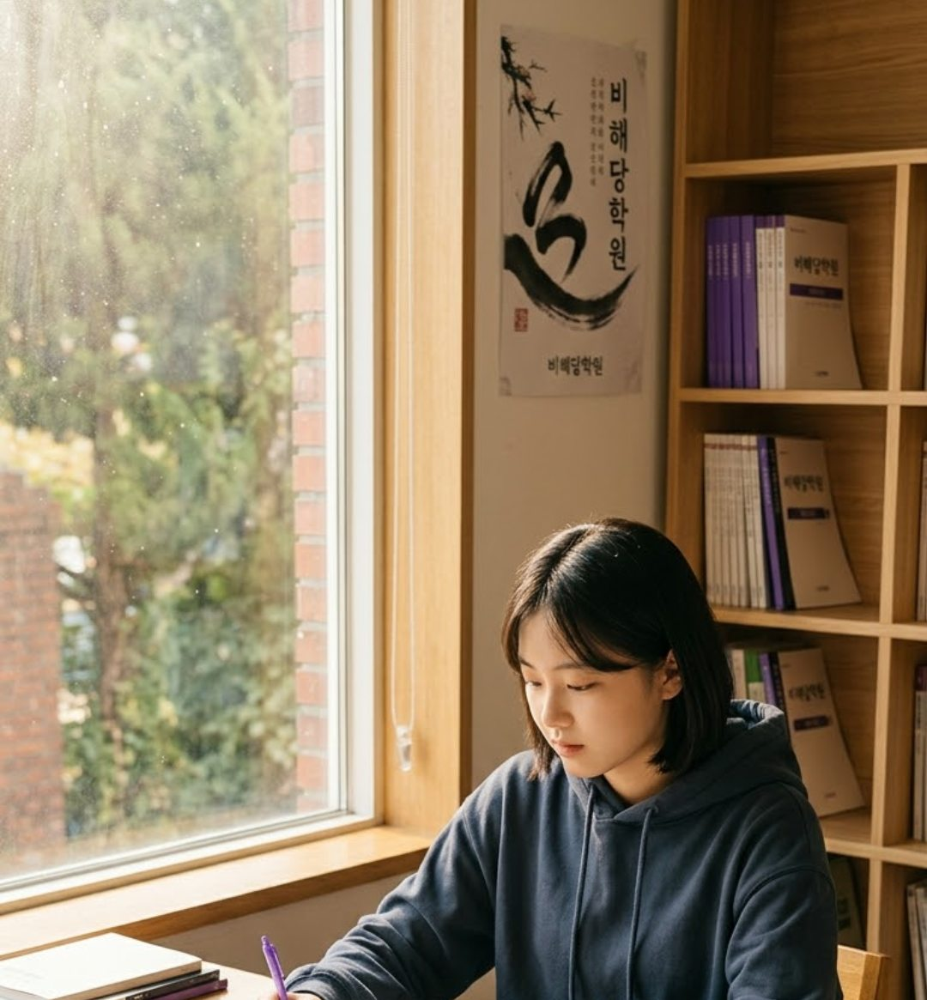
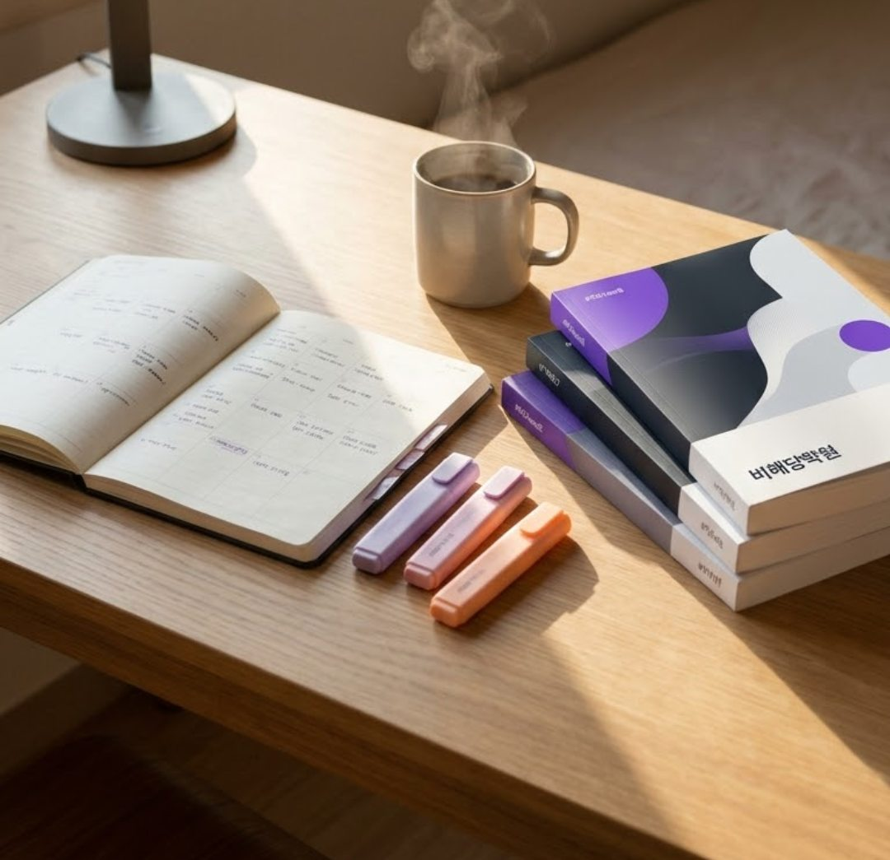
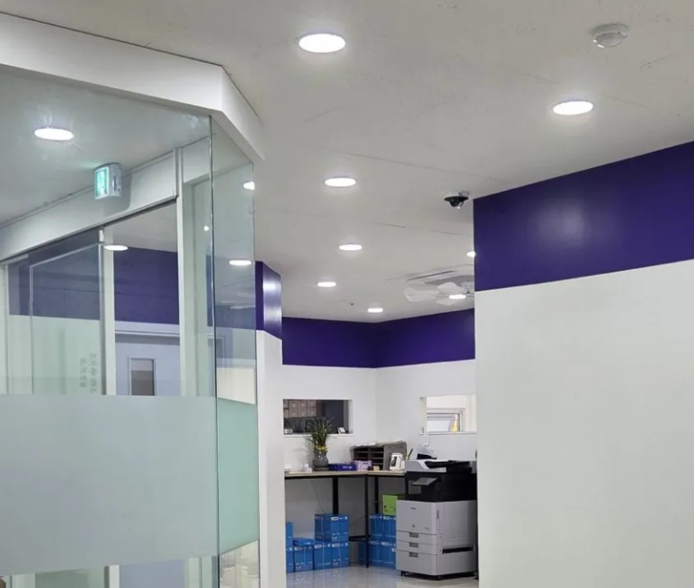

학부모님이 자주 하시는 말씀
겉으로는 비슷해 보여도 원인은 아이마다 다릅니다. 그래서 비해당학원은 어디서 막히는지부터 확인합니다.

‘게으름 없이 정진하라.’
학원 이름에 담긴 이 원칙대로,
학생 한 명 한 명의 공부를
끝까지 살핍니다.
비해당학원의 지도 방식
독해, 문학, 문법 중 어디서 점수가 빠지는지 학생별로 나누어 봅니다.
답을 알려 주는 데서 끝내지 않고, 지문에서 스스로 근거를 찾는 습관을 만듭니다.
문학·문법 개념서부터 학년별 모의고사, 중등 내신 대비까지 수준에 맞게 이어집니다.

겨울방학 몰입 특강
학기 중에 메우기 어려웠던 부분을 방학 동안 집중해서 채웁니다.
상담은 이렇게 진행됩니다

자주 묻는 질문
네. 상담을 받으셨다고 등록하셔야 하는 것은 아닙니다. 아이에게 지금 무엇이 필요한지 확인하는 자리로 생각해 주세요.
중학생과 고등학생을 대상으로 내신과 수능 국어를 지도합니다. 현재 학년과 목표에 따라 맞는 과정을 상담에서 안내해 드립니다.
겨울 특강은 취약한 독해와 문법을 기초부터 다지는 과정을 포함합니다. 상담에서 현재 수준을 확인한 뒤 시작 지점을 함께 정합니다.
학년과 과정에 따라 달라 상담 때 자세히 안내해 드립니다. 먼저 확인이 필요하시면 전화로 문의해 주세요.
최근 성적표와 국어 시험지가 있으면 충분합니다. 없어도 상담은 가능합니다.
진단 결과
학부모님의 응답을 바탕으로 한 참고용 결과입니다. 정확한 진단은 상담에서 성적표와 시험지를 함께 보며 진행합니다.
1분이면 충분합니다. 남겨 주신 시간대에 맞춰 학원에서 연락드립니다.
남겨 주신 시간대에 맞춰 학원에서 연락드리겠습니다.
준비가 어려우셔도 상담은 가능합니다.